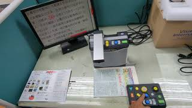
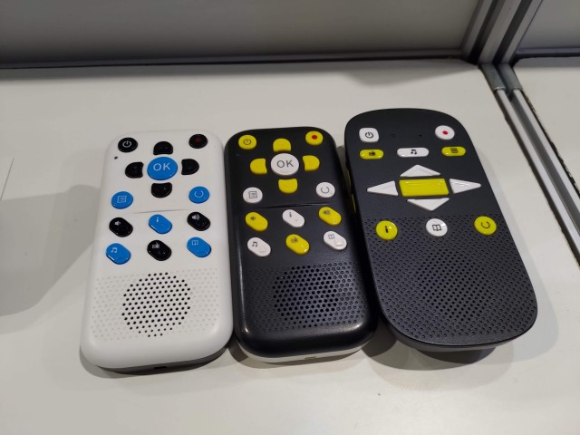

<section role="region" aria-label="OCR 與 TTS 原理">
    <h2>OCR &amp; TTS</h2>
    <div class="two-col">
        <div class="col-box">
            <h3>OCR 光學字元辨識</h3>
            <p style="font-size:.68em">把圖片中的文字影像比對資料庫，轉成可讀文字檔。</p>
            <ul>
                <li>限制：文本清晰度、數理符號、圖形</li>
            </ul>
        </div>
        <div class="col-box accent-green">
            <h3>TTS 文字轉語音</h3>
            <p style="font-size:.68em">將文字轉換為語音朗讀。</p>
            <ul>
                <li>限制：破音字、資料庫侷限、數理符號、圖形</li>
            </ul>
        </div>
    </div>
    <div class="img-grid-3" style="margin-top:.4em">
        <figure>
            
            <figcaption>擴視機 + OCR + TTS</figcaption>
        </figure>
        <figure>
            
            <figcaption>閱讀機外接螢幕</figcaption>
        </figure>
        <figure>
            
            <figcaption>聽書機</figcaption>
        </figure>
    </div>
</section>

<section role="region" aria-label="AI 輔具眼鏡">
    <h2>AI 輔具眼鏡</h2>
    <div class="img-grid-2">
        <figure>
            
            <figcaption>OrCam（夾式 AI 輔具）</figcaption>
        </figure>
        <figure>
            
            <figcaption>Envision Glasses</figcaption>
        </figure>
    </div>
    <p style="font-size:.67em;color:#555;margin-top:.5em">兩者均結合 OCR + AI，可朗讀文字、辨識人臉、描述場景，無需手動操作。</p>
</section>
